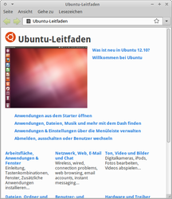

Dokumentation
Dieser Artikel wurde für die folgenden Ubuntu-Versionen getestet:
Dieser Artikel ist größtenteils für alle Ubuntu-Versionen gültig.
Zum Verständnis dieses Artikels sind folgende Seiten hilfreich:
In den offiziellen Paketquellen zu Ubuntu befinden sich Dokumentationen zu einer Vielzahl von Programmen. Diese Dokumentationen sind teilweise (deutlich) umfangreicher und detaillierter als die üblicherweise vorhandenen Manpages oder Infoseiten, so dass sich eine Installation der Dokumentation durchaus lohnt, sofern man sich intensiver mit einem Programm beschäftigen möchte (oder muss).
Im Folgenden werden einige dieser Dokumentationen vorgestellt. Die Dokumentation für GNOME, KDE und des Linux Documentation Projects  liegt im DocBook-Format vor.
liegt im DocBook-Format vor.
Ubuntu¶
|  |
| Ubuntu-Dokumentation |
Die offizielle Ubuntu-Dokumentation ist in der Standardinstallation enthalten, ebenso der zum Lesen dieser Dokumentation benötigte Hilfe-Browser Yelp. Ansonsten können diese über die Pakete
ubuntu-docs
yelp
 mit apturl
mit apturl
Paketliste zum Kopieren:
sudo apt-get install ubuntu-docs yelp
sudo aptitude install ubuntu-docs yelp
installiert werden [1].
Die Dokumentation kann über "System -> Hilfe und Unterstützung" oder auch durch den Aufruf von yelp [3] angezeigt werden. Man gelangt sofort zur Startseite. Die Navigation funktioniert genau wie in einem "normalen" Browser, indem man auf einen der Links klickt. Links sieht man immer eine Spalte mit den für das aktuelle Kapitel relevanten Stichworten / Verweisen.
Die Startseite der Ubuntu-Docs ist zwar auf Deutsch, allerdings ist der größere Teil der Dokumentation auf Englisch. Weiterhin sind in der Dokumentation in der Regel nur die für den installierten Desktop relevanten Informationen enthalten. Die komplette Dokumentation für die verschiedenen Ubuntu-Versionen findet man aber auch im Internet: help.ubuntu.com .
Weiterhin besteht die Möglichkeit, die allerneuste Version (welche ggf. auch nicht im Internet verfügbar ist) aus den Entwicklerquellen herunterzuladen und offline zu installieren.
Hinweis:
Die offizielle Dokumentation ist leider nicht immer topaktuell oder vollständig. Eine umfangreichere und detaillierte Hilfe bieten daher z.B. dieses Wiki, das englische Wiki oder eines der Foren / Wikis in diversen anderen Sprachen, welche auf dieser Internetseite aufgelistet sind.
Kubuntu¶
Das KDE Dokumentationsprojekt bietet Endanwenderdokumentation sowohl online als auch zur offline Verwendung ins System integriert an. Das Paket
kubuntu-docs
mit apturl
Paketliste zum Kopieren:
sudo apt-get install kubuntu-docs
sudo aptitude install kubuntu-docs
wird standardmäßig über die Paketverwaltung bereits vorinstalliert. Innerhalb eines KDE-Programms öffnet auf Tastendruck
F1 das Hilfefenster. Die gesamte KDE Hilfe kann über "K-Menü -> Hilfe" oder nach Start [3] des Hilfe-Browsers khelpcenter betrachtet und durchsucht werden.
Lubuntu¶
Für Lubuntu gibt es ein englischsprachiges  Community-Wiki . LXDE stellt ebenfalls ein Wiki zur Verfügung, dessen englische Ausgabe aktueller als die deutsche ist.
Community-Wiki . LXDE stellt ebenfalls ein Wiki zur Verfügung, dessen englische Ausgabe aktueller als die deutsche ist.
Xubuntu¶
Sowohl Xfce als auch Xubuntu pflegen eine eigene Dokumentation, allerdings nur online und in der Regel auf Englisch:

Speziell bei Xubuntu gibt es Bestrebungen, auch andere Sprachen anzubieten. Der aktuelle Stand kann auf Launchpad eingesehen werden. Wer bei der Übersetzung mithelfen möchte, dem sei auch der Blogbeitrag Building the Xubuntu documentation package locally empfohlen.
Linux-Kernel¶
Möchte man sich eingehender mit dem Linux-Kernel beschäftigen oder sucht detaillierte Informationen z.B. zu einem Treiber (Kernelmodule), so ist es empfehlenswert, die offizielle Kerneldokumentation über das Paket
linux-doc
mit apturl
Paketliste zum Kopieren:
sudo apt-get install linux-doc
sudo aptitude install linux-doc
zu installieren [1].
linux-doc ist ein Metapaket, welches immer automatisch auf die Dokumentation für den aktuell installierten Kernel verweist, d.h. die Dokumentation wird bei einen Update des Kernels auch automatisch auf den neusten Stand gebracht. Die gesamte Kernel-Dokumentation ist in englischer Sprache verfasst.
Die Kernel-Dokumentation findet man im Ordner /usr/share/doc/linux-doc-<Kernelversion>/. Dort gibt es die Verzeichnisse html und Documentation.
Im Verzeichnis html findet man die "allgemeinere" Dokumentation zu diversen übergeordneten Themen wie z.B. der Kernel-API oder Devices in Form von HTML-Dateien, welche wie üblich mit einem Browser angezeigt werden können.
Im Verzeichnis Documentation befinden sich "speziellere" Dokumentationen, welche detailliert auf einzelne Module etc. eingehen. Diese Dateien liegen in der Regel als mit gzip gepackte Textdateien vor. Zum Anzeigen (im Terminal) eignet sich der Befehl zmore.
Weitere Dokumentationen¶
Weitere Dokumentationen findet man in den Unterverzeichnissen von /usr/share/doc/, also dem Verzeichnis, in dem alle Dokumentationen abgelegt werden. Wie oben bereits erwähnt enthalten die offiziellen Paketquellen noch viel mehr Dokumentationen, aktuell mehr als 1000.
Die Pakete, welche eine Dokumentation enthalten, erkennt man oft am Namen, da er in der Regel die Struktur "programmname-doc" oder auch "programmname-docs" hat. Die Pakete können wie gewohnt über die Paketverwaltung installiert [1] werden. Gegebenenfalls müssen noch Paketquellen [2] hinzufügt werden. Die Dokumentation befindet sich dann in einem Unterverzeichnis von /usr/share/doc/.
Es gibt auch noch eigenständige Dokumentationsprojekte, wie SELFHTML, eine umfangreiche Dokumentation zur Webentwicklung.
- Erstellt mit Inyoka
-
 2004 – 2017 ubuntuusers.de • Einige Rechte vorbehalten
2004 – 2017 ubuntuusers.de • Einige Rechte vorbehalten
Lizenz • Kontakt • Datenschutz • Impressum • Serverstatus -
Serverhousing gespendet von